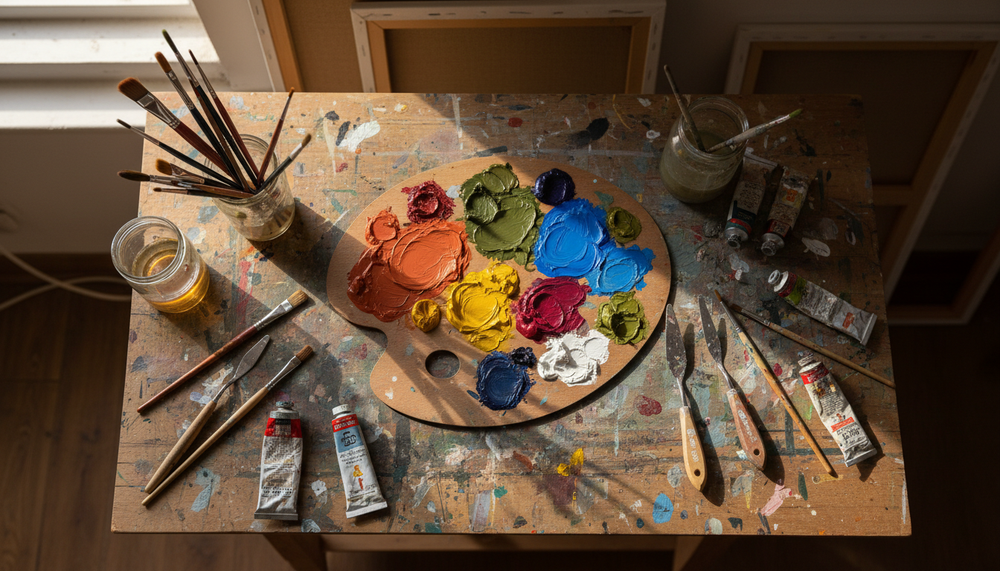
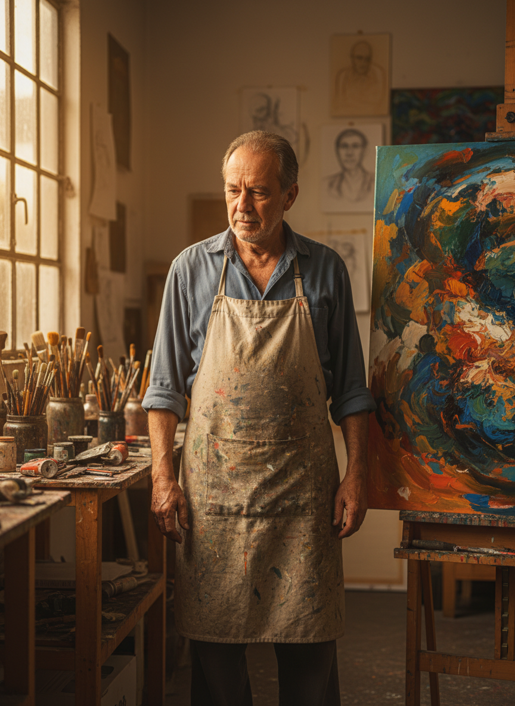
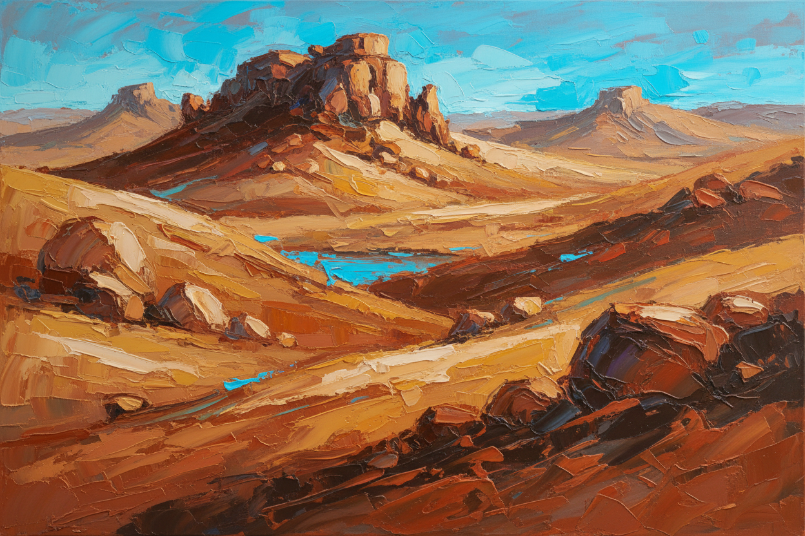

Instrumentos da alma
Pincéis, espátulas, pigmentos e superfícies que guardam marcas de tempo.

Portfólio Artístico
Uma experiência digital para reunir pinturas, memórias de ateliê e obras autorais feitas entre o gesto livre e a força da terra.
Inventário de Emoções
A galeria foi desenhada para valorizar a textura das telas, a presença do artista e o contato direto com colecionadores. Troque as imagens, textos e contatos pelos dados finais antes de publicar.
Galeria

Sobre o Artista
Sebastião “Tião” Fonseca é apresentado aqui como artista plástico brasileiro de linguagem expressiva, com uma produção que cruza figuração, abstração lírica e referências do interior do Brasil.
O site privilegia uma leitura editorial: imagens grandes, ritmo silencioso, tipografia elegante e informações objetivas para aquisição ou encomenda.
Solicitar informaçõesProcesso
Pincéis, espátulas, pigmentos e superfícies que guardam marcas de tempo.

Camadas densas, contrastes terrosos e composições que convidam contemplação.
“Cada obra é uma conversa entre o que foi visto, o que foi sentido e aquilo que ainda não ganhou nome.”
Encomendas & Parcerias
Use esta área para direcionar compradores, galeristas e interessados em comissionar uma obra exclusiva.